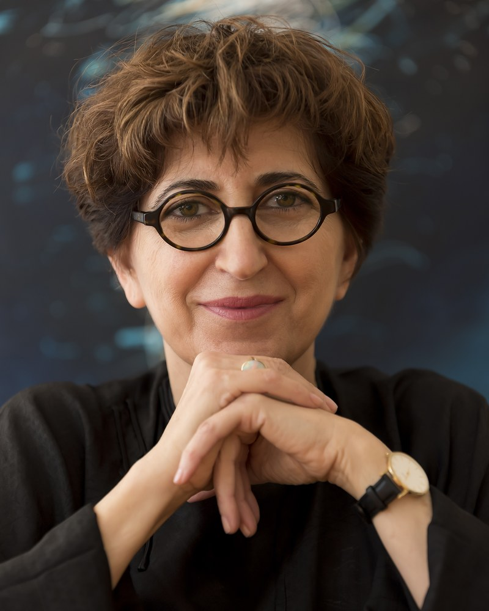

California Institute of Integral Studies, San Francisco, CA, USA / Lucid Art Foundation, Inverness, CA, USA

In 1988, a scientific (quantitative) investigation of transpersonal experience in lucid dreaming was conducted with seventy-seven participants (Bogzaran, 1989). In this two-week study, high-frequency lucid dreamers were invited to incubate the transpersonal dimensions of lucid dreaming. The incubation involved setting a specific intention to involve spiritual experiences in lucid dreams. First, participants wrote about their concept of the Divine and used the MILD method to assist them to induce lucid dreaming. Out of seventy-seven participants, thirty-four were able to have a lucid dream and carry their intention into the dream. They became lucid, remembered the intention, and reported an experience of a spiritual nature. After analysis, the result showed: 1) Core spiritual belief shape dream experience. 2) Setting intention directly impacts behavior and experience in lucid dreams. 3) Whether an intention is open or closed, it influences experience in dreams. 4) Preconceived idea of the Divine can limit what is experienced in the dream. Although the study would have been more conducive to qualitative research, it had to be conducted using quantitative method because lucid dreaming was not yet fully recognized in the field. In addition, the subject matter was obscure within the phenomena of lucid dreaming, and qualitative research was questioned as a viable form of scientific inquiry. The other thirty-three participants were not examined or discussed in the study. The data was not considered because they could not carry out the task in their lucid dreams. Thirty-six years later, those who were not included in the research were examined using phenomenological research and pattern analysis. This hermeneutic practice of “returning” to the data brought new perspective and confirmed the findings of the first research. Their experiences showed that the lucid dreamers, who could not carry on the intention, created obstacles by using a certain vocabulary holding them back and a few displayed that their core belief prevented them to have dreams of that nature. The study revealed how core beliefs and language can be deterrent to the development of new perception and hence an obstacle to evolving consciousness. This presentation discusses both research thirty-six years apart and its relevance in the current conversation about human consciousness.
Fariba Bogzaran, Ph.D., scientist/artist/visionary founded the first dream studies graduate program at John F. Kennedy University in Berkeley, California. She taught at JFK University in both the Departments of Interdisciplinary Consciousness Studies and Arts and Consciousness for over two decades. Among her publications are two coauthored books: Extraordinary Dreams (2002) and Integral Dreaming (2012) both published by the State University of New York Press (SUNY Press). As a scientist, she was part of the team of researchers exploring scientific studies on lucid dreaming at the Stanford Sleep Laboratory (1986–1989) working with Stephen LaBerge. She conducted the first scientific research on lucid dream incubation and transpersonal experiences (1989). Her pioneering art-based research, Images of the Lucid Mind: A Phenomenological Study of Lucid Dreaming and Modern Painting (1996), examined the parallels between transpersonal lucid dream experiences and the “inner world” paintings working with the last two members of the surrealist group Roberto Matta and Gordon Onslow Ford. Her post doctorate research led to coin the term Lucid Art, which examines and explores the phenomena of mediation, lucid dreaming, art and its impact on the viewer. She cofounded the Lucid Art Foundation with the surrealist painter Gordon Onslow Ford in 1998 where she has been the founding director. She is an adjunct faculty member at the California Institute of Integral Studies in San Francisco teaching on lucid dreaming. Among her art publications are: A Place of Creation (2024); Gordon Onslow Ford: A Man on the Green Island (2019); Artists, Poets and Visionaries of SS Vallejo: 1949-1969 (2018), and many others (see www.lucidart.org/fariba-bogzaran-articles-and-chapters).